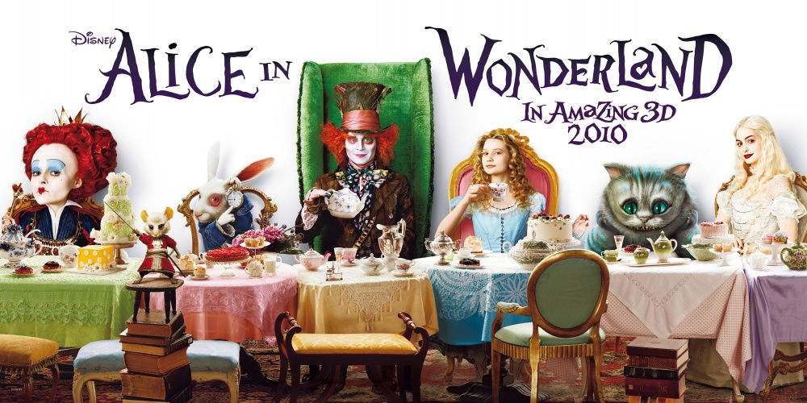
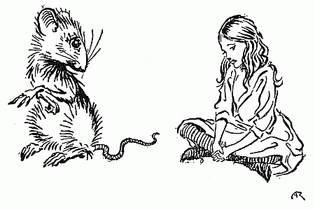

第三章 数据抓取¶
Requests和Beautifulsoup简介

基本原理¶
爬虫就是请求网站并提取数据的自动化程序。其中请求，提取，自动化是爬虫的关键！爬虫的基本流程：
发起请求
通过HTTP库向目标站点发起请求，也就是发送一个Request，请求可以包含额外的header等信息，等待服务器响应
获取响应内容
如果服务器能正常响应，会得到一个Response。Response的内容便是所要获取的页面内容，类型可能是HTML、Json字符串、二进制数据（图片或者视频）等类型
解析内容
得到的内容可能是HTML,可以用页面解析库、正则表达式进行解析；可能是Json,可以直接转换为Json对象解析；可能是二进制数据，可以做保存或者进一步的处理
保存数据
保存形式多样，可以存为文本，也可以保存到数据库，或者保存特定格式的文件
浏览器发送消息给网址所在的服务器，这个过程就叫做Http Request;服务器收到浏览器发送的消息后，能够根据浏览器发送消息的内容，做相应的处理，然后把消息回传给浏览器，这个过程就是Http Response.
需要解决的问题¶
页面解析
获取Javascript隐藏源数据
自动翻页
自动登录
连接API接口
一般的数据抓取，使用requests和beautifulsoup配合就可以了。
尤其是对于翻页时url出现规则变化的网页，只需要处理规则化的url就可以了。
以简单的例子是抓取天涯论坛上关于某一个关键词的帖子。
在天涯论坛，关于雾霾的帖子的第一页是： http://bbs.tianya.cn/list.jsp?item=free&nextid=0&order=8&k=雾霾
第二页是： http://bbs.tianya.cn/list.jsp?item=free&nextid=1&order=8&k=雾霾
第一个爬虫¶

Beautifulsoup Quick Start
http://www.crummy.com/software/BeautifulSoup/bs4/doc/
http://computational-class.github.io/bigdata/data/test.html
‘Once upon a time there were three little sisters,’ the Dormouse began in a great hurry; ‘and their names were Elsie, Lacie, and Tillie; and they lived at the bottom of a well–’
‘What did they live on?’ said Alice, who always took a great interest in questions of eating and drinking.
‘They lived on treacle,’ said the Dormouse, after thinking a minute or two.
‘They couldn’t have done that, you know,’ Alice gently remarked; ‘they’d have been ill.’
‘So they were,’ said the Dormouse; ‘very ill.’
Alice’s Adventures in Wonderland CHAPTER VII A Mad Tea-Party http://www.gutenberg.org/files/928/928-h/928-h.htm
import requests
from bs4 import BeautifulSoup
import requests
from bs4 import BeautifulSoup
url = 'https://vp.fact.qq.com/home'
content = requests.get(url)
soup = BeautifulSoup(content.text, 'html.parser')
help(requests.get)
Help on function get in module requests.api:
get(url, params=None, **kwargs)
Sends a GET request.
:param url: URL for the new :class:`Request` object.
:param params: (optional) Dictionary, list of tuples or bytes to send
in the query string for the :class:`Request`.
:param \*\*kwargs: Optional arguments that ``request`` takes.
:return: :class:`Response <Response>` object
:rtype: requests.Response
url = 'https://computational-class.github.io/bigdata/data/test.html'
content = requests.get(url)
#help(content)
print(content.text)
<html><head><title>The Dormouse's story</title></head>
<body>
<p class="title"><b>The Dormouse's story</b></p>
<p class="story">Once upon a time there were three little sisters; and their names were
<a href="http://example.com/elsie" class="sister" id="link1">Elsie</a>,
<a href="http://example.com/lacie" class="sister" id="link2">Lacie</a> and
<a href="http://example.com/tillie" class="sister" id="link3">Tillie</a>;
and they lived at the bottom of a well.</p>
<p class="story">...</p>
content.encoding
'utf-8'
Beautiful Soup¶
Beautiful Soup is a Python library designed for quick turnaround projects like screen-scraping. Three features make it powerful:
Beautiful Soup provides a few simple methods. It doesn’t take much code to write an application
Beautiful Soup automatically converts incoming documents to Unicode and outgoing documents to UTF-8. Then you just have to specify the original encoding.
Beautiful Soup sits on top of popular Python parsers like
lxmlandhtml5lib.
html.parser¶
Beautiful Soup supports the html.parser included in Python’s standard library
lxml¶
but it also supports a number of third-party Python parsers. One is the lxml parser lxml. Depending on your setup, you might install lxml with one of these commands:
$ apt-get install python-lxml
$ easy_install lxml
$ pip install lxml
html5lib¶
Another alternative is the pure-Python html5lib parser html5lib, which parses HTML the way a web browser does. Depending on your setup, you might install html5lib with one of these commands:
$ apt-get install python-html5lib
$ easy_install html5lib
$ pip install html5lib
url = 'http://computational-class.github.io/bigdata/data/test.html'
content = requests.get(url)
content = content.text
soup = BeautifulSoup(content, 'html.parser')
soup
<html><head><title>The Dormouse's story</title></head>
<body>
<p class="title"><b>The Dormouse's story</b></p>
<p class="story">Once upon a time there were three little sisters; and their names were
<a class="sister" href="http://example.com/elsie" id="link1">Elsie</a>,
<a class="sister" href="http://example.com/lacie" id="link2">Lacie</a> and
<a class="sister" href="http://example.com/tillie" id="link3">Tillie</a>;
and they lived at the bottom of a well.</p>
<p class="story">...</p></body></html>
print(soup.prettify())
<html>
<head>
<title>
The Dormouse's story
</title>
</head>
<body>
<p class="title">
<b>
The Dormouse's story
</b>
</p>
<p class="story">
Once upon a time there were three little sisters; and their names were
<a class="sister" href="http://example.com/elsie" id="link1">
Elsie
</a>
,
<a class="sister" href="http://example.com/lacie" id="link2">
Lacie
</a>
and
<a class="sister" href="http://example.com/tillie" id="link3">
Tillie
</a>
;
and they lived at the bottom of a well.
</p>
<p class="story">
...
</p>
</body>
</html>
html
head
title
body
p (class = ‘title’, ‘story’ )
a (class = ‘sister’)
href/id
Select 方法¶
标签名不加任何修饰
类名前加点
id名前加 #
我们也可以利用这种特性，使用soup.select()方法筛选元素，返回类型是 list
Select方法三步骤
Inspect (检查)
Copy
Copy Selector
鼠标选中标题
The Dormouse's story, 右键检查Inspect鼠标移动到选中的源代码
右键Copy–>Copy Selector
body > p.title > b
soup.select('body > p.title > b')[0].text
"The Dormouse's story"
Select 方法: 通过标签名查找¶
soup.select('title')[0].text
"The Dormouse's story"
soup.select('a')
[<a class="sister" href="http://example.com/elsie" id="link1">Elsie</a>,
<a class="sister" href="http://example.com/lacie" id="link2">Lacie</a>,
<a class="sister" href="http://example.com/tillie" id="link3">Tillie</a>]
soup.select('b')
[<b>The Dormouse's story</b>]
Select 方法: 通过类名查找¶
soup.select('.title')
[<p class="title"><b>The Dormouse's story</b></p>]
soup.select('.sister')
[<a class="sister" href="http://example.com/elsie" id="link1">Elsie</a>,
<a class="sister" href="http://example.com/lacie" id="link2">Lacie</a>,
<a class="sister" href="http://example.com/tillie" id="link3">Tillie</a>]
soup.select('.story')
[<p class="story">Once upon a time there were three little sisters; and their names were
<a class="sister" href="http://example.com/elsie" id="link1">Elsie</a>,
<a class="sister" href="http://example.com/lacie" id="link2">Lacie</a> and
<a class="sister" href="http://example.com/tillie" id="link3">Tillie</a>;
and they lived at the bottom of a well.</p>,
<p class="story">...</p>]
Select 方法: 通过id名查找¶
soup.select('#link1')
[<a class="sister" href="http://example.com/elsie" id="link1">Elsie</a>]
soup.select('#link1')[0]['href']
'http://example.com/elsie'
Select 方法: 组合查找¶
将标签名、类名、id名进行组合
例如查找 p 标签中，id 等于 link1的内容
soup.select('p #link1')
[<a class="sister" href="http://example.com/elsie" id="link1">Elsie</a>]
Select 方法:属性查找¶
加入属性元素
属性需要用大于号
>连接属性和标签属于同一节点，中间不能加空格。
soup.select("head > title")
[<title>The Dormouse's story</title>]
soup.select("body > p")
[<p class="title"><b>The Dormouse's story</b></p>,
<p class="story">Once upon a time there were three little sisters; and their names were
<a class="sister" href="http://example.com/elsie" id="link1">Elsie</a>,
<a class="sister" href="http://example.com/lacie" id="link2">Lacie</a> and
<a class="sister" href="http://example.com/tillie" id="link3">Tillie</a>;
and they lived at the bottom of a well.</p>,
<p class="story">...</p>]
find_all方法¶
#soup('p')
soup.find_all('p')
[<p class="title"><b>The Dormouse's story</b></p>,
<p class="story">Once upon a time there were three little sisters; and their names were
<a class="sister" href="http://example.com/elsie" id="link1">Elsie</a>,
<a class="sister" href="http://example.com/lacie" id="link2">Lacie</a> and
<a class="sister" href="http://example.com/tillie" id="link3">Tillie</a>;
and they lived at the bottom of a well.</p>,
<p class="story">...</p>]
soup.find_all('p')
[<p class="title"><b>The Dormouse's story</b></p>,
<p class="story">Once upon a time there were three little sisters; and their names were
<a class="sister" href="http://example.com/elsie" id="link1">Elsie</a>,
<a class="sister" href="http://example.com/lacie" id="link2">Lacie</a> and
<a class="sister" href="http://example.com/tillie" id="link3">Tillie</a>;
and they lived at the bottom of a well.</p>,
<p class="story">...</p>]
[i.text for i in soup('p')]
["The Dormouse's story",
'Once upon a time there were three little sisters; and their names were\nElsie,\nLacie and\nTillie;\nand they lived at the bottom of a well.',
'...']
for i in soup('p'):
print(i.text)
The Dormouse's story
Once upon a time there were three little sisters; and their names were
Elsie,
Lacie and
Tillie;
and they lived at the bottom of a well.
...
for tag in soup.find_all(True):
print(tag.name)
html
head
title
body
p
b
p
a
a
a
p
soup('head') # or soup.head
[<head><title>The Dormouse's story</title></head>]
soup('body') # or soup.body
[<body>
<p class="title"><b>The Dormouse's story</b></p>
<p class="story">Once upon a time there were three little sisters; and their names were
<a class="sister" href="http://example.com/elsie" id="link1">Elsie</a>,
<a class="sister" href="http://example.com/lacie" id="link2">Lacie</a> and
<a class="sister" href="http://example.com/tillie" id="link3">Tillie</a>;
and they lived at the bottom of a well.</p>
<p class="story">...</p></body>]
soup('title') # or soup.title
[<title>The Dormouse's story</title>]
soup('p')
[<p class="title"><b>The Dormouse's story</b></p>,
<p class="story">Once upon a time there were three little sisters; and their names were
<a class="sister" href="http://example.com/elsie" id="link1">Elsie</a>,
<a class="sister" href="http://example.com/lacie" id="link2">Lacie</a> and
<a class="sister" href="http://example.com/tillie" id="link3">Tillie</a>;
and they lived at the bottom of a well.</p>,
<p class="story">...</p>]
soup.p
<p class="title"><b>The Dormouse's story</b></p>
soup.title.name
'title'
soup.title.string
"The Dormouse's story"
soup.title.text
# 推荐使用text方法
"The Dormouse's story"
soup.title.parent.name
'head'
soup.p
<p class="title"><b>The Dormouse's story</b></p>
soup.p['class']
['title']
soup.find_all('p', {'class', 'title'})
[<p class="title"><b>The Dormouse's story</b></p>]
soup.find_all('p', class_= 'title')
[<p class="title"><b>The Dormouse's story</b></p>]
soup.find_all('a', {'class', 'sister'})
[<a class="sister" href="http://example.com/elsie" id="link1">Elsie</a>,
<a class="sister" href="http://example.com/lacie" id="link2">Lacie</a>,
<a class="sister" href="http://example.com/tillie" id="link3">Tillie</a>]
soup.find_all('p', {'class', 'story'})[0].find_all('a')
[<a class="sister" href="http://example.com/elsie" id="link1">Elsie</a>,
<a class="sister" href="http://example.com/lacie" id="link2">Lacie</a>,
<a class="sister" href="http://example.com/tillie" id="link3">Tillie</a>]
soup.a
<a class="sister" href="http://example.com/elsie" id="link1">Elsie</a>
soup('a')
[<a class="sister" href="http://example.com/elsie" id="link1">Elsie</a>,
<a class="sister" href="http://example.com/lacie" id="link2">Lacie</a>,
<a class="sister" href="http://example.com/tillie" id="link3">Tillie</a>]
soup.find(id="link3")
<a class="sister" href="http://example.com/tillie" id="link3">Tillie</a>
soup.find_all('a')
[<a class="sister" href="http://example.com/elsie" id="link1">Elsie</a>,
<a class="sister" href="http://example.com/lacie" id="link2">Lacie</a>,
<a class="sister" href="http://example.com/tillie" id="link3">Tillie</a>]
soup.find_all('a', {'class', 'sister'}) # compare with soup.find_all('a')
[<a class="sister" href="http://example.com/elsie" id="link1">Elsie</a>,
<a class="sister" href="http://example.com/lacie" id="link2">Lacie</a>,
<a class="sister" href="http://example.com/tillie" id="link3">Tillie</a>]
soup.find_all('a', {'class', 'sister'})[0]
<a class="sister" href="http://example.com/elsie" id="link1">Elsie</a>
soup.find_all('a', {'class', 'sister'})[0].text
'Elsie'
soup.find_all('a', {'class', 'sister'})[0]['href']
'http://example.com/elsie'
soup.find_all('a', {'class', 'sister'})[0]['id']
'link1'
soup.find_all(["a", "b"])
[<b>The Dormouse's story</b>,
<a class="sister" href="http://example.com/elsie" id="link1">Elsie</a>,
<a class="sister" href="http://example.com/lacie" id="link2">Lacie</a>,
<a class="sister" href="http://example.com/tillie" id="link3">Tillie</a>]
print(soup.get_text())
The Dormouse's story
The Dormouse's story
Once upon a time there were three little sisters; and their names were
Elsie,
Lacie and
Tillie;
and they lived at the bottom of a well.
...